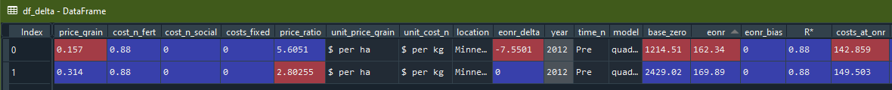
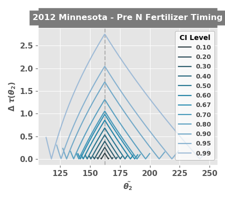
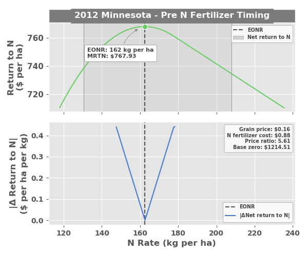
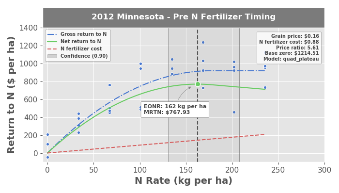
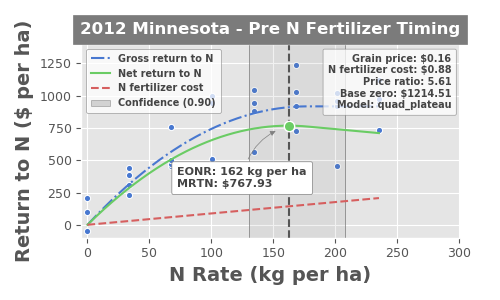
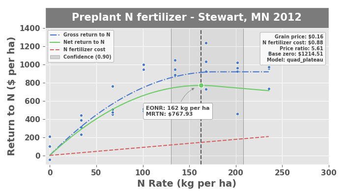
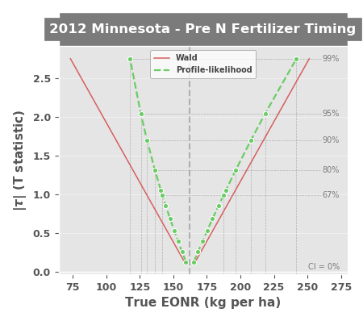

5.1.1. EONR¶
-
class
eonr.EONR(cost_n_fert=0.5, cost_n_social=0.0, costs_fixed=0.0, price_grain=3.0, col_n_app='rate_n_applied_lbac', col_yld='yld_grain_dry_buac', col_crop_nup='nup_total_lbac', col_n_avail='soil_plus_fert_n_lbac', col_year='year', col_location='location', col_time_n='time_n', unit_currency='$', unit_fert='lbs', unit_grain='bu', unit_area='ac', model='quad_plateau', ci_level=0.9, base_dir=None, base_zero=True, print_out=False)[source]¶ Bases:
objectEONRis a Python tool for computing the optimum nitrogen rate and its confidence intervals from agricultural research data.Methods Summary
calc_delta([df_results])Calculates the change in EONR among economic scenarios.
calculate_eonr(df[, col_n_app, col_yld, ...])Calculates the EONR and its confidence intervals.
plot_delta_tstat([level_list, style])Plots the test statistic as a function nitrogen rate
plot_derivative([ci_type, ci_level, style])Plots a zoomed up view of the ONR and the derivative
plot_eonr([ci_type, ci_level, run_n, x_min, ...])Plots EONR, MRTN, GRTN, net return, and nitrogen cost.
plot_modify_size([fig, plotsize_x, ...])Modifies the size of the last plot generated
plot_modify_title(title_text[, g, size_font])Allows user to replace the title text
plot_save([fname, base_dir, fig, dpi])Saves a generated matplotlib figure to file
plot_tau([y_axis, emphasis, run_n, style])Plots the test statistic as a function nitrogen rate
Prints the results of the optimum nitrogen rate computation
set_column_names([col_n_app, col_yld, ...])Sets the column name(s) for
EONR.df_dataset_trial_details([year, location, n_timing])Sets the year, location, or nitrogen timing
set_units([unit_currency, unit_fert, ...])Sets the units data in
EONR.df_dataand for reportingupdate_econ([cost_n_fert, cost_n_social, ...])Sets or resets the nitrogen fertilizer cost, social cost of nitrogen, fixed costs, and/or grain price.
Methods Documentation
-
calc_delta(df_results=None)[source]¶ Calculates the change in EONR among economic scenarios.
EONR.calc_deltafilters all data by location, year, and nitrogen timing, then the "delta" is calculated as the difference relative to the economic scenario resulting in the highest EONR.- Parameters
df_results (
Pandas dataframe, optional) -- The dataframe containing the results fromEONR.calculate_eonr()(default: None).- Returns
df_delta -- The dataframe with the newly inserted EONR delta.
- Return type
pandas.DataFrame
Example
Please complete the EONR.calculate_eonr example first because this example builds on the results of the
my_eonrobject.Change the economic scenario (using
EONR.calculate_eonr) and calculate the EONR again for the same dataset (usingEONR.calculate_eonr)>>> price_grain = 0.314 # in USD per kg grain >>> my_eonr.update_econ(price_grain=price_grain) >>> my_eonr.calculate_eonr(df_data) Computing EONR for Minnesota 2012 Pre Cost of N fertilizer: $0.88 per kg Price grain: $0.31 per kg Fixed costs: $0.00 per ha Checking quadratic and quadric-plateau models for best fit.. Quadratic model r^2: 0.72 Quadratic-plateau model r^2: 0.73 Using the quadratic-plateau model.. Economic optimum N rate (EONR): 169.9 kg per ha [135.2, 220.9] (90.0% confidence) Maximum return to N (MRTN): $1682.04 per ha
Use
EONR.calc_deltato>>> df_delta = my_eonr.calc_delta(my_eonr.df_results)
-
calculate_eonr(df, col_n_app=None, col_yld=None, col_crop_nup=None, col_n_avail=None, col_year=None, col_location=None, col_time_n=None, bootstrap_ci=False, samples_boot=9999, delta_tstat=False)[source]¶ Calculates the EONR and its confidence intervals.
col_n_appandcol_yldare required byEONR, but not necessarily byEONR.calculate_eonr(). They must either be set during the initialization ofEONR, before runningEONR.calculate_eonr(usingEONR.set_column_names), or they must be passed in thisEONR.calculate_eonrmethod.- Parameters
df (
Pandas dataframe) -- The dataframe containing the experimental data.col_n_app (
str, optional) -- Column name pointing to the rate of applied N fertilizer data (default: None).col_yld (
str, optional) -- Column name pointing to the grain yield data. This column is multiplied by price_grain to create the 'grtn' column inEONR.df_data(default: None).col_crop_nup (
str, optional) -- Column name pointing to crop N uptake data (default: None).col_n_avail (
str, optional) -- Column name pointing to available soil N at planting plus fertilizer throughout the season (default: None).col_year (
str, optional) -- Column name pointing to year (default: None).col_location (
str, optional) -- Column name pointing to location (default: None).col_time_n (
str, optional) -- Column name pointing to nitrogen application timing (default: None).bootstrap_ci (
bool, optional) -- Indicates whether bootstrap confidence intervals are to be computed. If calculating the EONR for many sites and/or economic scenarios, it may be desirable to set toFalsebecause the bootstrap confidence intervals take the most time to compute (default: False).samples_boot (
int, optional) -- Number of samples in the bootstrap computation (default: 9999).delta_tstat (
bool, optional) -- Indicates whether the difference from the t-statistic will be computed (as a function of theta2/N rate). May be useful to observe what optimization method is best suited to reach convergence when computing the profile-likelihood CIs (default: False).
Note
col_crop_nupandcol_n_availare required to calculate the socially optimum nitrogen rate, SONR. The SONR is the optimum nitrogen rate considering the social cost of nitrogen, so therefore,EONR.cost_n_socialmust also be set.col_year,col_location, andcol_time_nare purely optional. They only affect the titles and axes labels of the plots.Example
Load and initialize
eonr>>> from eonr import EONR >>> import os >>> import pandas as pd
Load the sample data
>>> base_dir = r'F:\nigo0024\Documents\GitHub\eonr\eonr' >>> df_data = pd.read_csv(os.path.join(base_dir, 'data', 'minnesota_2012.csv'))
Set column names
>>> col_n_app = 'rate_n_applied_kgha' >>> col_yld = 'yld_grain_dry_kgha'
Set units
>>> unit_currency = '$' >>> unit_fert = 'kg' >>> unit_grain = 'kg' >>> unit_area = 'ha'
Set economic conditions
>>> cost_n_fert = 0.88 # in USD per kg nitrogen >>> price_grain = 0.157 # in USD per kg grain
Initialize
EONR>>> my_eonr = EONR(cost_n_fert=cost_n_fert, price_grain=price_grain, col_n_app=col_n_app, col_yld=col_yld, unit_currency=unit_currency, unit_grain=unit_grain, unit_fert=unit_fert, unit_area=unit_area, model=None, base_dir=base_dir)
Calculate the economic optimum nitrogen rate using
EONR.calculate_eonr>>> my_eonr.calculate_eonr(df_data) Computing EONR for Minnesota 2012 Pre Cost of N fertilizer: $0.88 per kg Price grain: $0.16 per kg Fixed costs: $0.00 per ha Checking quadratic and quadric-plateau models for best fit.. Quadratic model r^2: 0.72 Quadratic-plateau model r^2: 0.73 Using the quadratic-plateau model.. Economic optimum N rate (EONR): 162.3 kg per ha [130.5, 207.8] (90.0% confidence) Maximum return to N (MRTN): $767.93 per ha
-
plot_delta_tstat(level_list=None, style='ggplot')[source]¶ Plots the test statistic as a function nitrogen rate
- Parameters
level_list (
list) -- The confidence levels to plot; should be a subset of items in EONR.ci_list (default: None).style (
str, optional) -- The style of the plolt; can be any of the options supported bymatplotlib
Example
Load and initialize
eonr, then load the sample data>>> from eonr import EONR >>> import os >>> import pandas as pd >>> base_dir = r'F:\nigo0024\Documents\GitHub\eonr\eonr' >>> df_data = pd.read_csv(os.path.join(base_dir, 'data', 'minnesota_2012.csv'))
Set column names, units, and economic conditions
>>> col_n_app = 'rate_n_applied_kgha' >>> col_yld = 'yld_grain_dry_kgha' >>> unit_currency = '$' >>> unit_fert = 'kg' >>> unit_grain = 'kg' >>> unit_area = 'ha' >>> cost_n_fert = 0.88 # in USD per kg nitrogen >>> price_grain = 0.157 # in USD per kg grain
Initialize
EONR>>> my_eonr = EONR(cost_n_fert=cost_n_fert, price_grain=price_grain, col_n_app=col_n_app, col_yld=col_yld, unit_currency=unit_currency, unit_grain=unit_grain, unit_fert=unit_fert, unit_area=unit_area, model=None, base_dir=base_dir)
Calculate the economic optimum nitrogen rate using
EONR.calculate_eonr, being sure to setdelta_stattoTrue>>> my_eonr.calculate_eonr(df_data, delta_tstat=True) Computing EONR for Minnesota 2012 Pre Cost of N fertilizer: $0.88 per kg Price grain: $0.16 per kg Fixed costs: $0.00 per ha Checking quadratic and quadric-plateau models for best fit.. Quadratic model r^2: 0.72 Quadratic-plateau model r^2: 0.73 Using the quadratic-plateau model.. Economic optimum N rate (EONR): 162.3 kg per ha [130.5, 207.8] (90.0% confidence) Maximum return to N (MRTN): $767.93 per ha
Plot the Delta t-stat plot using
EONR.plot_delta_tstat>>> my_eonr.plot_delta_tstat()
-
plot_derivative(ci_type='profile-likelihood', ci_level=None, style='ggplot')[source]¶ Plots a zoomed up view of the ONR and the derivative
- Parameters
ci_type (str) -- Indicates which confidence interval type should be plotted. Options are 'wald', to plot the Wald CIs; 'profile-likelihood', to plot the profile-likelihood CIs; or 'bootstrap', to plot the bootstrap CIs (default: 'profile-likelihood').
ci_level (float) -- The confidence interval level to be plotted, and must be one of the values in EONR.ci_list. If None, uses the EONR.ci_level (default: None).
level (
float) -- The confidence levels to plot; should be a value from EONR.ci_list (default: 0.90).style (
str, optional) -- The style of the plolt; can be any of the options supported bymatplotlib
Example
Please complete the EONR.calculate_eonr example first because this example builds on the results of the
my_eonrobject.>>> my_eonr.plot_derivative()
-
plot_eonr(ci_type='profile-likelihood', ci_level=None, run_n=None, x_min=None, x_max=None, y_min=None, y_max=None, show_model=True, style='ggplot')[source]¶ Plots EONR, MRTN, GRTN, net return, and nitrogen cost.
If left as
None,x_min,x_max,y_min, andy_maxare set byMatplotlib.- Parameters
ci_type (
str, optional) -- Indicates which confidence interval type should be plotted. Options are 'wald', to plot the Wald CIs; 'profile-likelihood', to plot the profile-likelihood CIs; or 'bootstrap', to plot the bootstrap CIs (default: 'profile-likelihood').ci_level (
float, optional) -- The confidence interval level to be plotted, and must be one of the values in EONR.ci_list. IfNone, uses theEONR.ci_level(default: None).run_n (
int, optional) -- NOT IMPLEMENTED. The run number to plot, as indicated in EONR.df_results; if None, uses the most recent, or maximum, run_n in EONR.df_results (default: None).x_min (
int, optional) -- The minimum x-bounds of the plot (default: None)x_max (
int, optional) -- The maximum x-bounds of the plot (default: None)y_min (
int, optional) -- The minimum y-bounds of the plot (default: None)y_max (
int, optional) -- The maximum y-bounds of the plot (default: None)show_model (str) -- Whether to display the type of fitted model in the helper legend (default: True).
style (
str, optional) -- The style of the plot; can be any of the options supported by matplotlib (default: 'ggplot').
Example
Please complete the EONR.calculate_eonr example first because this example builds on the results of the
my_eonrobject.>>> my_eonr.plot_eonr(x_min=-5, x_max=300, y_min=-100, y_max=1400)
-
plot_modify_size(fig=None, plotsize_x=7, plotsize_y=4, labelsize=11)[source]¶ Modifies the size of the last plot generated
- Parameters
fig (
Matplotlib Figure, optional) -- Matplotlib figure to modify (default: None)plotsize_x (
float, optional) -- Sets x size of plot in inches (default: 7)plotsize_y (
float, optional) -- Sets y size of plot in inches (default: 4)labelsize (
float, optional) -- Sets tick and label (defaulat: 11)
Example
Please complete the EONR.calculate_eonr and EONR.plot_eonr examples first because this example builds on the results of the
my_eonr.fig_eonr.figobject.>>> my_eonr.plot_modify_size(fig=my_eonr.fig_eonr.fig, plotsize_x=5, plotsize_y=3, labelsize=9)
-
plot_modify_title(title_text, g=None, size_font=12)[source]¶ Allows user to replace the title text
- Parameters
title_text (
str) -- New title textg (
matplotlib.figure) -- Matplotlib figure object to modify (default: None)size_font (
float) -- Font size to use (default: 12)
Example
Please complete the EONR.calculate_eonr and EONR.plot_eonr examples first because this example builds on the results of the
my_eonr.fig_eonr.figobject.>>> my_eonr.plot_modify_title('Preplant N fertilizer - Stewart, MN 2012', g=my_eonr.fig_eonr.fig, size_font=15)
-
plot_save(fname=None, base_dir=None, fig=None, dpi=300)[source]¶ Saves a generated matplotlib figure to file
- Parameters
fname (
str, optional) -- Filename to save plot to (default: None)base_dir (
str, optional) -- Base file directory when saving results (default: None)fig (eonr.fig, optional) -- EONR figure object to save (default: None)
dpi (
int, optional) -- Resolution to save the figure to in dots per inch (default: 300)
Example
Please complete the EONR.calculate_eonr and EONR.plot_eonr examples first because this example builds on the results of the
my_eonr.fig_eonr.figobject.Set output filename
>>> fname = r'F:\nigo0024\Downloads\eonr_fig.png'
Save the most recent figure
>>> my_eonr.plot_save(fname) ``fig`` is None, so saving the current (most recent) figure.
>>> os.path.isfile(fname) True
-
plot_tau(y_axis='t_stat', emphasis='profile-likelihood', run_n=None, style='ggplot')[source]¶ Plots the test statistic as a function nitrogen rate
- Parameters
y_axis (
str, optional) -- Value to plot on the y-axis. Options are 't_stat', to plot the T statistic; 'f_stat', to plot the F-statistic; or 'level', to plot the confidence level; (default: 't_stat').emphasis (
str, optional) -- Indicates which confidence interval type, if any, should be emphasized. Options are 'wald', to empahsize the Wald CIs; 'profile-likelihood', to empahsize the profile-likelihood CIs; 'bootstrap', to empahsize the bootstrap CIs; orNone, to empahsize no CI (default: 'profile-likelihood').run_n (
int, optional) -- The run number to plot, as indicated inEONR.df_ci; ifNone, uses the most recent, or maximum, run_n inEONR.df_ci(default: None).style (
str, optional) -- The style of the plolt; can be any of the options supported bymatplotlib
Example
Please complete the EONR.calculate_eonr example first because this example builds on the results of the
my_eonrobject.>>> my_eonr.plot_tau()
-
print_results()[source]¶ Prints the results of the optimum nitrogen rate computation
Example
Please complete the EONR.calculate_eonr example first because this example builds on the results of the
my_eonrobject.>>> my_eonr.print_results() Economic optimum N rate (EONR): 162.3 kg per ha [130.5, 207.8] (90.0% confidence) Maximum return to N (MRTN): $767.93 per ha
-
set_column_names(col_n_app=None, col_yld=None, col_crop_nup=None, col_n_avail=None, col_year=None, col_location=None, col_time_n=None)[source]¶ Sets the column name(s) for
EONR.df_dataIf these descriptions are used as metadata in the input dataset, they are accessed for plotting purposes. These parameters do not affect the calculation of the EONR or its confidence intervals in any way.
- Parameters
col_n_app (
str, optional) -- Column name pointing to the rate of applied N fertilizer data (default: None).col_yld (
str, optional) -- Column name pointing to the grain yield data. This column is multiplied by price_grain to create the 'grtn' column inEONR.df_data(default: None).col_crop_nup (
str, optional) -- Column name pointing to crop N uptake data (default: None).col_n_avail (
str, optional) -- Column name pointing to available soil N at planting plus fertilizer throughout the season (default: None).col_year (
str, optional) -- Column name pointing to year (default: None).col_location (
str, optional) -- Column name pointing to location (default: None).col_time_n (
str, optional) -- Column name pointing to nitrogen application timing (default: None).
Example
Load and initialize
eonr>>> from eonr import EONR >>> import os >>> import pandas as pd >>> base_dir = r'F:\nigo0024\Documents\GitHub\eonr\eonr' >>> my_eonr = EONR(model=None, base_dir=base_dir)
Set the column names using
EONR.set_column_names>>> my_eonr.set_column_names(col_n_app='rate_n_applied_kgha', col_yld='yld_grain_dry_kgha') >>> print(my_eonr.col_n_app) >>> print(my_eonr.col_yld) rate_n_applied_kgha yld_grain_dry_kgha
-
set_trial_details(year=None, location=None, n_timing=None)[source]¶ Sets the year, location, or nitrogen timing
If these descriptions are used as metadata in the input dataset, they are accessed for plotting purposes. These parameters do not affect the calculation of the EONR or its confidence intervals in any way.
- Parameters
year (
strorint, optional) -- Year of experimental trial (default: None)location (
strorint, optional) -- Location of experimental trial (default: None)n_timing (
strorint, optional) -- Nitrogen timing of experimental trial (default: None)
Example
Load and initialize
eonr>>> from eonr import EONR >>> import os >>> import pandas as pd >>> base_dir = r'F:\nigo0024\Documents\GitHub\eonr\eonr' >>> my_eonr = EONR(model=None, base_dir=base_dir)
Set the trial details using
EONR.set_trial_details>>> my_eonr.set_trial_details(year=2019, location='St. Paul, MN', n_timing='At planting') >>> print(my_eonr.year) >>> print(my_eonr.location) >>> print(my_eonr.n_timing) 2019 St. Paul, MN At planting
-
set_units(unit_currency=None, unit_fert=None, unit_grain=None, unit_area=None)[source]¶ Sets the units data in
EONR.df_dataand for reporting- Parameters
unit_currency (
str, optional) -- Currency unit, e.g., "$" (default: None).unit_fert (
str, optional) -- Fertilizer unit, e.g., "lbs" (default: None).unit_grain (
str, optional) -- Grain unit, e.g., "bu" (default: None).unit_area (
str, optional) -- Area unit, e.g., "ac" (default: None).
Example
Load and initialize
eonr>>> from eonr import EONR >>> import os >>> import pandas as pd >>> base_dir = r'F:\nigo0024\Documents\GitHub\eonr\eonr' >>> my_eonr = EONR(model=None, base_dir=base_dir)
Set the units using
EONR.set_units>>> my_eonr.set_units(unit_currency='USD', unit_fert='kg', unit_grain='kg', unit_area='ha') >>> print(my_eonr.unit_currency) >>> print(my_eonr.unit_fert) >>> print(my_eonr.unit_grain) >>> print(my_eonr.unit_area) USD kg kg ha
-
update_econ(cost_n_fert=None, cost_n_social=None, costs_fixed=None, price_grain=None)[source]¶ Sets or resets the nitrogen fertilizer cost, social cost of nitrogen, fixed costs, and/or grain price.
The price ratio is recomputed based on the passed information, then the the lowest level folder in the base directory is renamed/adjusted (
EONR.base_dir) based on to the price ratio. The folder name is set according to the economic scenario (useful when runningEONRfor many different economic scenarios then plotting and saving results for each scenario).- Parameters
cost_n_fert (
float, optional) -- Cost of nitrogen fertilizer (default: None).cost_n_social (
float, optional) -- Cost of pollution caused by excess nitrogen (default: None).costs_fixed (float, optional) -- Fixed costs on a per area basis
(default -- None)
price_grain (
float, optional) -- Price of grain (default: None).
Example
Load and initialize
eonr>>> from eonr import EONR >>> import os >>> import pandas as pd >>> base_dir = r'F:\nigo0024\Documents\GitHub\eonr\eonr' >>> my_eonr = EONR(model=None, base_dir=base_dir)
Set/update the cost of fertilizer and price of grain using
EONR.update_econ>>> my_eonr.update_econ(cost_n_fert=0.88, price_grain=0.157) >>> print(my_eonr.price_ratio) >>> print(my_eonr.base_dir) 5.605095541 F:\nigo0024\Documents\GitHub\eonr\eonr rad_5605
Set/update the social cost of nitrogen, again using
EONR.update_econ>>> my_eonr.update_econ(cost_n_social=1.1) >>> print(my_eonr.price_ratio) >>> print(my_eonr.base_dir) 12.61146496 F:\nigo0024\Documents\GitHub\eonr\eonr\social_12611_1100
-